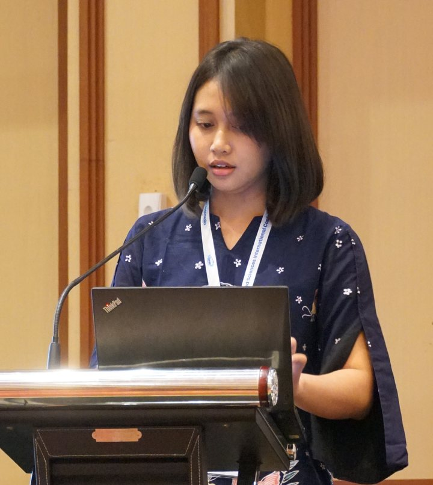
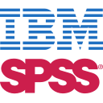

I build dashboards and forecasting analyses with Power BI, Python and Excel. Below is my featured project, followed by coursework in time series and machine learning.

A 4-page Power BI dashboard and a short analysis of 3,028 public charging stations: where they are, who runs them, and how fast they charge.
Coursework projects in time series and machine learning. Each page explains the question, the method and the result, with the report to download.
Group project: ten years of daily exchange rates, three neural networks, and a Streamlit dashboard that forecasts the next 30 business days.
Six stocks picked by a CAPM-optimal portfolio, each modeled with its best ARIMA to check whether the portfolio weights still hold.
Benign versus malignant classification on the Wisconsin dataset, with the choice of K tested from 1 to 20.
Two classifiers, two optimizers (Bayesian and genetic) and two train-test splits, compared on 208 sonar signals.
I am a Business Statistics student at ITS, expected to graduate in 2027. I like the part of analysis where a pile of rows becomes something a team can act on: a clean dataset, a clear chart, and an honest note on what the data cannot say.
I also work as a teaching assistant for Data Exploration and Visualization, preparing hands-on dashboard material in Excel, Power BI, Looker Studio, Tableau, R Shiny and Streamlit.

SPSSBusiness intelligence
Statistics
Machine learning
Open to internships in business development, data analysis and reporting. tirayucandra1@gmail.com